Flashcards that stick.
Draw a card, type the answer, and QIZU tells you on the spot whether you were right. No flipping the card over, no grading yourself — though on lighter days, Choices and Self-check are one tap away.
Typing is what makes it stick.
Get it on Google PlayFree · Android · No ads · In‑app purchases
Draw. Type. Know.
The app does the checking, so “I basically knew that” can’t quietly become “close enough”.
-
STEP 1
A card comes up
The ones you keep missing and the ones you’ve barely seen come up more often. That is the entire scheduler.
-
STEP 2
You type the answer
Not a tap, not a flip. Producing the answer from memory is the part that does the work.
-
STEP 3
You find out at once
Mint for right, magenta for wrong — and when you miss, the answer you were after, right there on the card.
No schedules. No due-date pile-ups.
Every card carries a weight built from how often it has been asked and how often you got it wrong. New and difficult cards surface more often; the ones you have mastered step back — but never disappear. Nothing is ever due, so nothing can pile up while you are away. Open the app, practise as long as you feel like, stop whenever you want.
How the next card is picked
Each card’s weight is 1 + 8 × failure rate + 4 × novelty,
with the failure rate smoothed so a brand-new card starts at “coin flip” rather
than “perfect”. In practice a new card turns up about five times as often as a
mastered one, and a card you keep missing about four times as often.
Nothing ever reaches zero — the floor guarantees every card in the pool keeps a real chance of appearing, which is why mastered cards quietly come back around instead of vanishing. And no card repeats within five consecutive draws.
What counts as right
Typing is judged strictly on the letters that matter and generously on
everything else. Extra spaces, capitalisation and bracketed hints are ignored.
On a Pinyin side, tone marks are folded away — and v stands in for
ü, the way every pinyin keyboard works. A stored answer can list
alternatives separated by a semicolon, and any one of them counts. Typed Chinese,
Japanese or Korean doesn’t have to reproduce the stored spacing.
There is no fuzzy matching: a real spelling mistake is a miss. But if you typed something that was right anyway, one tap counts it as correct — and that undoes the miss everywhere, in the card’s own record as well as the day’s statistics.
| Stored answer | You typed | |
|---|---|---|
| 你好 (nǐ hǎo) | 你好 | right |
| to go [movement] | TO GO | right |
| nǐ hǎo · Pinyin | ni hao | right |
| nǚ rén · Pinyin | nv ren | right |
| car; automobile | automobile | right |
| Ich weiß · German | ich weiss | wrong |
Type it, tap it, or turn it over.
Choose per set and switch whenever you like. All three feed the same card statistics and the same streak.
-
Type
The full-effort one, and the reason QIZU exists. You write the answer; the app grades it.
-
Choices
Four options drawn from your own cards — and never a second right answer hiding among them.
-
Self-check
Tap the card and it turns over. Knew it, or didn’t — for the days when typing is too much.
A session that fits the moment.
Ten questions at a bus stop, or an endless session on the sofa.
Narrow the round to the cards you keep getting wrong, or the ones you have barely seen.
Hear every word.QIZU+
A word you have only ever read is a word you cannot yet say — pronunciation is half of knowing it, and it is learned by ear.
Tap play on a card and the word is spoken aloud — Chinese, Japanese, Korean, English, German, French and Spanish. If you want, you can switch a session to audio-only questions and, whenever the question side has a voice, the text disappears: the word gets spoken aloud, and you can replay it as often as you like. It works with Type, Choices and Self-check alike.
Every word in every ready-made list is voiced. Your own cards play too, whenever the word already appears in one of those lists.
Where the four options come from
Distractors are other answers from the set you are practising, so they are always the right kind of thing — same language, same script. They are ranked by how plausible they look beside the real answer and sampled from the closest handful, so two encounters with the same card rarely offer the same four.
Anything that could also be correct is excluded: if a card’s answer is
car; automobile, no option matching either word can appear. And when
a set is too small to offer three good distractors, the question simply shows
fewer options — it never quietly turns back into a typing question.
A standard word list, or your own.
Start from a standard word list in two taps, or paste a list straight out of a chat message. Either way the cards are yours from that moment on.
Your first list is free, whatever its size.
Lists download on demand and then belong to you — edit them, merge them, export them. The starter list’s cards don’t count against your own card limit either, so a 2,500-word HSK 6 is a perfectly reasonable place to begin. Hearing the words is a QIZU+ extra.
See every list
- HSK 1Chinese (Simpl.) · Pinyin · English150
- HSK 2Chinese (Simpl.) · Pinyin · English147
- HSK 3Chinese (Simpl.) · Pinyin · English298
- HSK 4Chinese (Simpl.) · Pinyin · English598
- HSK 5Chinese (Simpl.) · Pinyin · English1,298
- HSK 6Chinese (Simpl.) · Pinyin · English2,500
- HSK 3.0 — Level 1Chinese (Simpl.) · Pinyin · English506
- HSK 3.0 — Level 2Chinese (Simpl.) · Pinyin · English750
- HSK 3.0 — Level 3Chinese (Simpl.) · Pinyin · English953
- HSK 3.0 — Level 4Chinese (Simpl.) · Pinyin · English972
- HSK 3.0 — Level 5Chinese (Simpl.) · Pinyin · English1,059
- HSK 3.0 — Level 6Chinese (Simpl.) · Pinyin · English1,123
- HSK 3.0 — Levels 7–9 (Part A)Chinese (Simpl.) · Pinyin · English1,869
- HSK 3.0 — Levels 7–9 (Part B)Chinese (Simpl.) · Pinyin · English1,869
- HSK 3.0 — Levels 7–9 (Part C)Chinese (Simpl.) · Pinyin · English1,868
- JLPT N5Japanese · Kana · English718
- JLPT N4Japanese · Kana · English668
- JLPT N3Japanese · Kana · English2,140
- JLPT N2Japanese · Kana · English1,808
- JLPT N1Japanese · Kana · English2,698
- TOPIK I — Beginner (A)Korean · English894
- TOPIK II — Intermediate (B)Korean · English2,028
- TOPIK II — Advanced (C)Korean · English2,786
- English A1English · Definition1,063
- English A2English · Definition1,241
- English B1English · Definition2,139
- English B2English · Definition2,417
- English C1English · Definition913
- Academic EnglishEnglish · Definition959
- Business EnglishEnglish · Definition1,744
- Workplace EnglishEnglish · Definition1,249
- German A1German · English650
- German A2German · English650
- German B1German · English1,200
- German B2German · English1,184
- French A1French · English650
- French A2French · English650
- French B1French · English1,200
- French B2French · English1,182
- Spanish A1Spanish · English650
- Spanish A2Spanish · English650
- Spanish B1Spanish · English1,218
- Spanish B2Spanish · English1,183
Ready-made word lists include data from CC-CEDICT (CC BY-SA 4.0), Jonathan Waller’s JLPT resources (CC BY), the CEFR-J Wordlist v1.5 (© Tono Laboratory, TUFS), the Octanove Vocabulary Profile (CC BY-SA 4.0), the New Academic Word List, Business Service List and TOEIC Service List by Browne, C., Culligan, B. & Phillips, J. (CC BY-SA 4.0), and the National Institute of Korean Language’s learner vocabulary list (KOGL 1). The German, French and Spanish lists were written for QIZU.
-
Paste a list
The realistic way a word list reaches a phone is a chat message or a copied table — not a file. Paste it straight in.
-
Import CSV
Delimiter and header detected for you, columns mapped to sides, duplicates skipped.
-
Merge two sets
The cards already there keep every bit of their history; the copies start fresh.
-
Export CSV
Free at every tier, because it is the one path by which your words leave QIZU. Or share a set as plain text.
-
GroupsQIZU+
Put several sets in a group and practise them as one pool — three levels deep, if that is how your subject is shaped.
-
Offline, then synced
No account needed: it works on a plane out of the box. Sign in with Google when you want your cards backed up and synced across your devices.
A card can have three sides.
汉字 / Pinyin / English. Or term / formula / worked example. Or a word, its article and its plural.
You choose which side asks and which side you answer — in any direction, and you can change your mind before every session.
Ask any side · answer any other
A streak worth keeping.
One answered card is a day. The flame does the rest — and it forgives the day you miss.
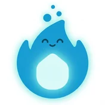
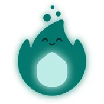
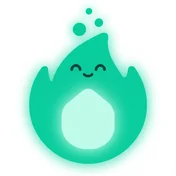
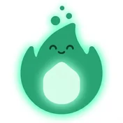
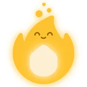
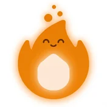
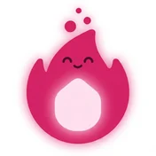
Eight colourways on the way to two years, walked as one continuous heating-up — and from a week in, the number beside the flame starts to glow too.
-
Streak freezes
Miss a day and a freeze bridges it for you — no button to press. One a month, three with QIZU+.
-
One evening nudge
At a time you pick, and only when the day is still empty. Turn it off and it stays off.
-
Numbers, not vibes
Cards, minutes and accuracy per day, week, month, year — right and wrong stacked in one bar.
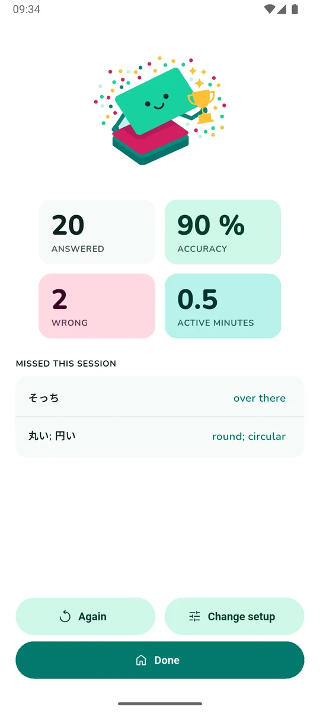
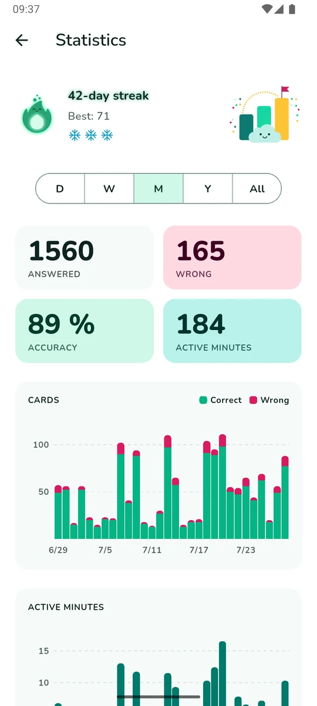
Bright, flat, and out of the way.
One screen at a time, never more than a tap from home. No ads anywhere, at any tier.
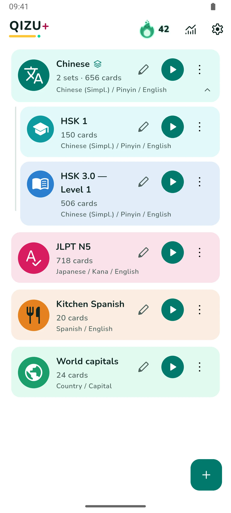
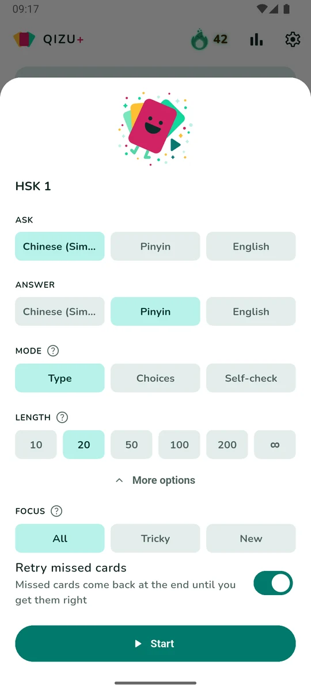
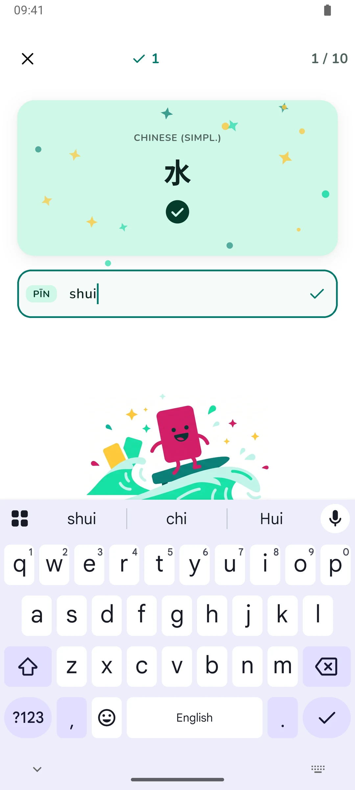
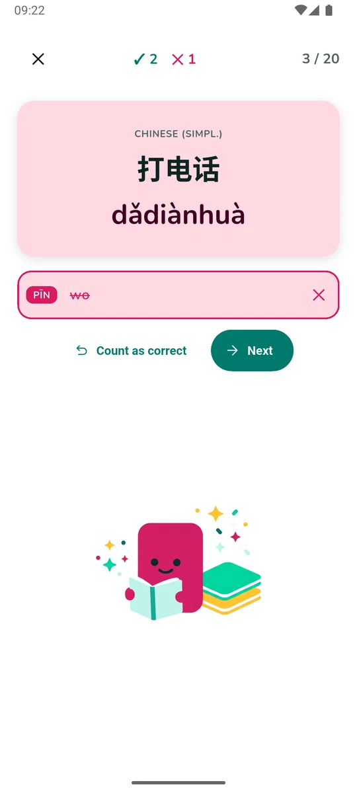
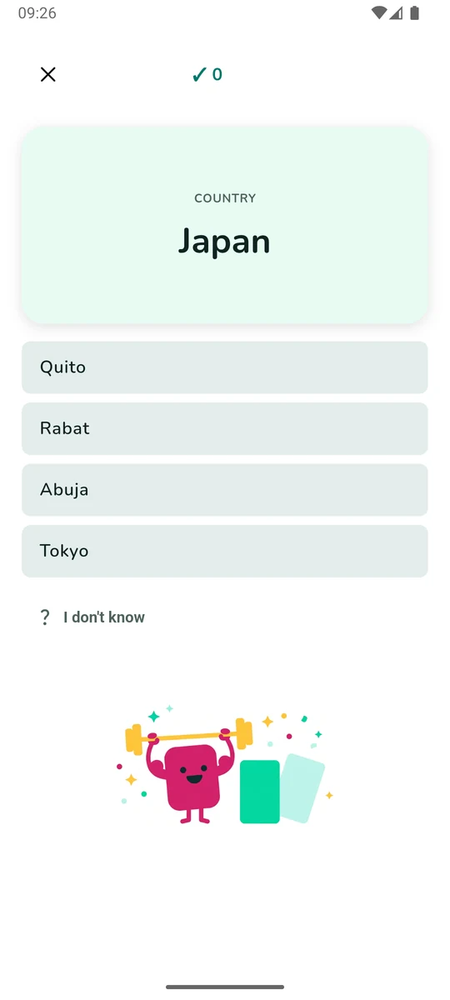
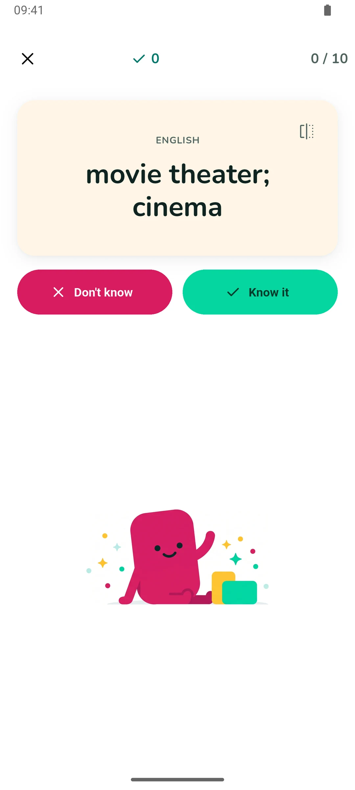
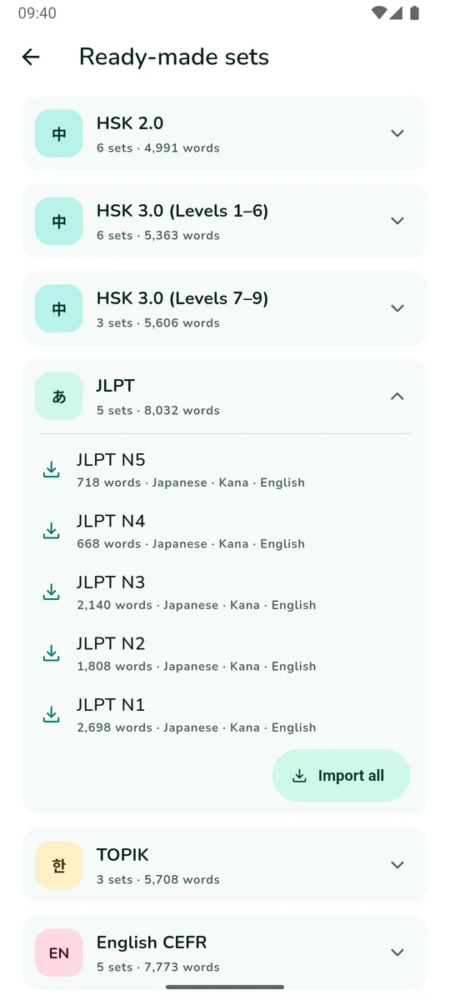
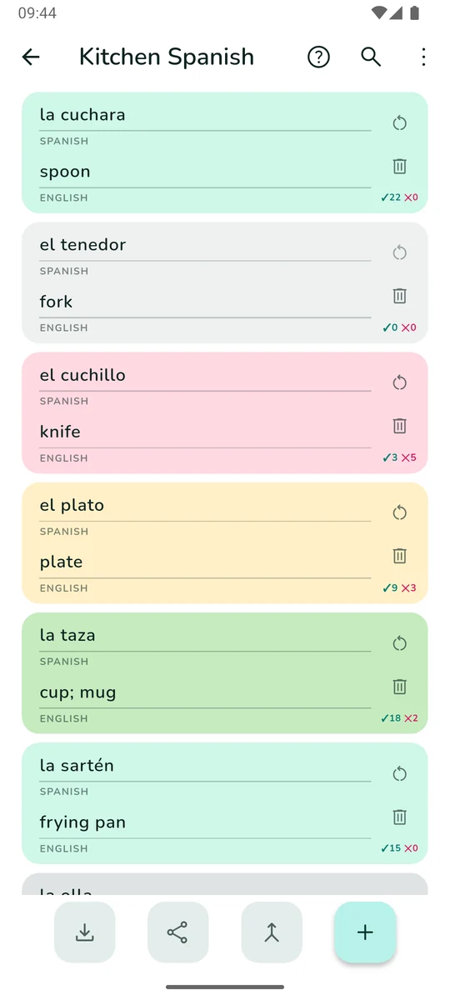
QIZU+ — 100 sets and 10,000 cards, the whole ready-made catalogue, every word spoken, groups that practise several sets as one pool, and three streak freezes a month. Monthly or yearly.
The free app is not a demo: 3 sets, 100 cards of your own and one ready-made list of any size — and CSV export works at every tier, so your words are never locked in. If a subscription ends, everything you made stays exactly where it is.
Type it.
Know it.
Get it on Google Play
Free · Android · No ads · In‑app purchases